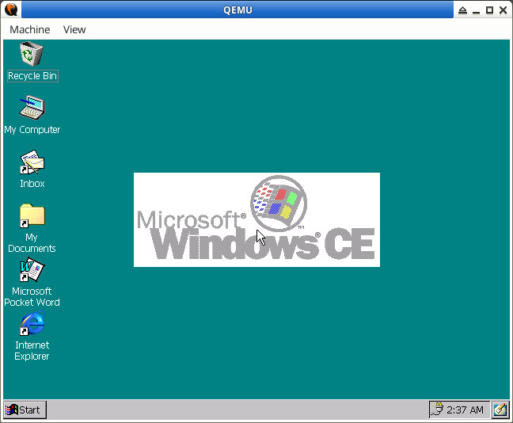

參考資訊：
https://github.com/Milek7/wince-qemu
https://archive.org/download/windows-ce-disk-images/
https://www.reddit.com/r/wceload/comments/uxnul7/windows_ce_images_vhds/
步驟如下：
$ cd $ wget https://github.com/steward-fu/website/releases/download/wdm/wince3.img $ qemu-system-i386 -m 32 wince3.img
